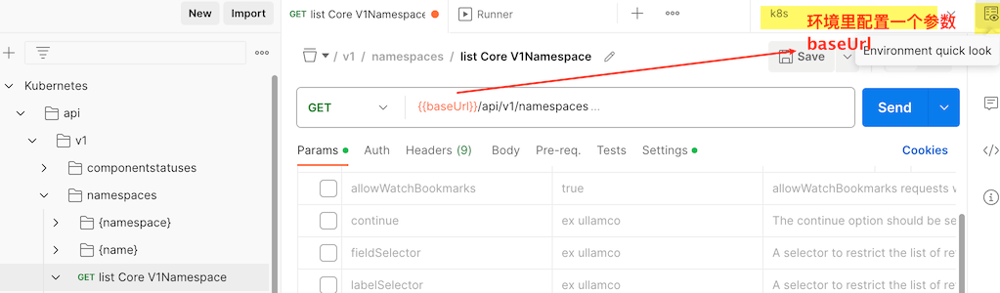

从1.24开始 k8s使用的docker-engine 不一样了. 是cri-dockerd 而不是原来的dockerd-shm
1 k8s文档离线部署
这只是简单的处理, 还是有部分url是官方的
配置文件修改, 可能不需要?
static/js/search.js 添加替换url的代码
$.ajax(ajaxConf).done(function(res) {
if (res.webPages == null) return; // If no result, 'webPages' is 'undefined'
var paginationAnchors = window.getPaginationAnchors(Math.ceil(res.webPages.totalEstimatedMatches / 10));
res.webPages.value.map(ob => { results += window.getResultMarkupString(ob); })
// ===== add start ======
re = new RegExp("https://kubernetes.io","g");
results = results.replace(re, "http://localhost:8000");
// ===== add end ======
if($('#bing-results-container').length > 0) $('#bing-results-container').html(results);
if($('#bing-pagination-container').length > 0) $('#bing-pagination-container').html(paginationAnchors);
});# 安装hugo 和node , 将里面的对应版本修改为你安装的版本
# netlify.toml
git config --global url."https://ghproxy.com/https://github.com/".insteadOf https://github.com/
make module-init
npm ci
hugo # 生成静态文件到当前public目录 ,用nginx 来配置, 不要用 make serve ,会占用大量内存.
# 取消
git config --global --unset url."https://ghproxy.com/https://github.com/".insteadOf
# 更新api 文档
curl 'https://ghproxy.com/https://raw.githubusercontent.com/kubernetes/kubernetes/master/api/openapi-spec/swagger.json' > api-ref-assets/api/swagger.json
cd api-ref-generator/gen-resourcesdocs
go get -u golang.org/x/sys
#go: upgraded golang.org/x/sys v0.0.0-20200930185726-fdedc70b468f => v0.9.0
cd ../../
make api-reference如果想要配置多个版本, 在页面上可以点击跳转到比如1.26的文档, 那么修改 config.toml里的params.versions对应的url,也要对应生成静态文件,nginx 配置url
打开网页,首页就会看到 You are viewing documentation for Kubernetes version: v1.23
git co release-1.23
# 使用配置文件里原来的版本, 最新的hugo 生成静态文件时会报错...
go install -tags extended github.com/gohugoio/hugo@v0.87.0
git config --global url."https://ghproxy.com/https://github.com/".insteadOf https://github.com/
make module-init
npm ci
~/go/bin/hugo # 生成静态文件到当前public目录 ,用nginx 来配置, 不要用 make serve ,会占用大量内存.
# 取消
git config --global --unset url."https://ghproxy.com/https://github.com/".insteadOf
# 更新api 文档
curl https://ghproxy.com/https://raw.githubusercontent.com/kubernetes/kubernetes/release-1.23/api/openapi-spec/swagger.json > api-ref-assets/api/swagger.json
cd api-ref-generator/gen-resourcesdocs
go get -u golang.org/x/sys
#go: upgraded golang.org/x/sys v0.0.0-20200930185726-fdedc70b468f => v0.9.0
cd ../../
make api-reference2 api 导入postman
上面的 swagger.json 导入postman
宿主机上添加这个参数, 值是 上面设置的 kubectl 所在主机ip:8001 
sed发送请求后提示ssl错误, 在settings 里将 Enable SSL certificate verification 取消
3 前置安装
我打包的虚拟机镜像里已经前置安装了一些东西,可能有些这里没记录.后续我再整理.
- 关闭防火墙
# --now 表示 马上停止, 这样就是禁用并停止
systemctl disable --now firewalld
# systemctl disable --now dnsmasq
# systemctl disable --now NetworkManager
# 以前我这个也是disabled
sed -Ei.bak 's/^SELINUX=[[:alpha:]]+$/SELINUX=permissive/' /etc/selinux/config
sed -Ei.bak 's/^SELINUX=[[:alpha:]]+$/SELINUX=disabled/' /etc/sysconfig/selinux
setenforce 0 # 0表示设置为permissive
getenforce # 查看, 显示 permissive- 关闭 swap分区
swapoff -a && sysctl -w vm.swappiness=0
# 注释掉fstab 里的swap配置
sed -Ei.bak '/^[^#]*swap/s/^/#/' /etc/fstab- docker配置
/etc/docker/daemon.json
{
"registry-mirrors": [
"https://registry.docker-cn.com",
"http://hub-mirror.c.163.com",
"https://docker.mirrors.ustc.edu.cn"
],
"exec-opts": ["native.cgroupdriver=systemd"],
"max-concurrent-downloads": 10,
"max-concurrent-uploads": 5,
"log-opts": { // /var/lib/docker/containers/
"max-size": "300m",
"max-file": "2"
},
"live-restore": true // 如果不是true, 重启docker,回导致容器重启.
}systemctl daemon-reload
systemctl restart docker
# 查看是否配置
docker info |grep -E -A 3 "Cgroup|Registry Mirrors"- 时间同步
timedatectl set-timezone Asia/Shanghai
sed -i "s/server 0.centos.pool.ntp.org iburst/server cn.pool.ntp.org iburst/" /etc/chrony.conf
systemctl enable chronyd
systemctl start chronyd- ulimit
ulimit -SHn 65535
cat >> /etc/security/limits.conf <<EOF
* soft nofile 655350
* hard nofile 655350
* soft noproc 655350
* hard noproc 655350
* soft memlock unlimited
* hard memlock unlimited
EOF- 节点间ssh配置
4 部署
4.1 kubeadm方式
4.1.1 所有节点安装kubeadm
cat <<EOF | sudo tee /etc/yum.repos.d/kubernetes.repo
[kubernetes]
name=Kubernetes
baseurl=https://mirrors.aliyun.com/kubernetes/yum/repos/kubernetes-el7-x86_64/
enabled=1
gpgcheck=1
repo_gpgcheck=1
gpgkey=https://mirrors.aliyun.com/kubernetes/yum/doc/yum-key.gpg https://mirrors.aliyun.com/kubernetes/yum/doc/rpm-package-key.gpg
EOF- 验证安装
4.1.2 master节点init
apiVersion 注意看配置文件的每个kind的版本, 然后去文档搜对应的配置,可能有变化
kubeadm.yaml 做一些修改
apiVersion: kubeadm.k8s.io/v1beta3
bootstrapTokens:
- groups:
- system:bootstrappers:kubeadm:default-node-token
token: abcdef.0123456789abcdef
ttl: 24h0m0s
usages:
- signing
- authentication
kind: InitConfiguration
localAPIEndpoint:
advertiseAddress: 192.168.66.102 # (1)
bindPort: 6443
nodeRegistration:
criSocket: /var/run/dockershim.sock # docker 作为runtime
# criSocket: unix:///var/run/containerd/containerd.sock # containerd 作为runtime
imagePullPolicy: IfNotPresent
name: master # (4)
taints: null
---
apiServer:
timeoutForControlPlane: 4m0s
apiVersion: kubeadm.k8s.io/v1beta3
certificatesDir: /etc/kubernetes/pki
clusterName: kubernetes
controllerManager: {}
dns: {}
# type: CoreDNS v1beta3 字段 "ClusterConfiguration.dns.type" 已经被移除，因为 CoreDNS 是 kubeadm 所支持 的唯一 DNS 服务器类型。
etcd:
local:
dataDir: /var/lib/etcd
listen-peer-urls: "https://192.168.66.102:2380" # (2)
listen-client-urls: "https://192.168.66.102:2379,http://127.0.0.1:2379"
imageRepository: registry.cn-hangzhou.aliyuncs.com/google_containers # (3)
kind: ClusterConfiguration
kubernetesVersion: 1.23.17
networking:
dnsDomain: cluster.local
serviceSubnet: 10.96.0.0/12
podSubnet: 10.244.0.0/16 # (5)
scheduler: {}- master节点的ip
- 添加listen-peer-urls
- 修改为 aliyun 的
- 节点的名字
- 集群Pod的网段
master节点
# 列出需要下载的镜像
kubeadm config images list --config kubeadm.yaml
# 先 下载 镜像
kubeadm config images pull --config kubeadm.yaml
kubeadm init --config kubeadm.yaml
# 可以重新修改相关配置.
kubectl edit cm -n kube-system kubeadm-config
mkdir -p $HOME/.kube
sudo cp -i /etc/kubernetes/admin.conf $HOME/.kube/config
sudo chown $(id -u):$(id -g) $HOME/.kube/config
# 记下 kubeadm join 的命令
# 忘记了, 也没关系 ,重新输出
kubeadm token create --print-join-command4.1.3 安装 Pod 网络附加组件
- 有许多网络模型可以选择
- 需要kubeadm init 时指定 –pod-network-cidr 这个参数
- flannel
wget https://ghproxy.com/https://github.com/flannel-io/flannel/releases/latest/download/kube-flannel.yml
k create -f kube-flannel.yml
k get po -A # 会看到CoreDNS 也成功running了.- calico https://docs.tigera.io/calico/latest/getting-started/kubernetes/quickstart#install-calico
wget https://docs.projectcalico.org/manifests/calico.yaml
# 会看到 实际的url
https://raw.githubusercontent.com/projectcalico/calico/v3.26.1/manifests/calico.yaml
wget https://ghproxy.com/https://raw.githubusercontent.com/projectcalico/calico/v3.26.1/manifests/calico.yaml
# 做相应修改..
k apply -f calico.yaml通过给 Kubelet 传递 –network-plugin=cni 命令行选项可以选择 CNI 插件。 Kubelet 从 –cni-conf-dir （默认是 /etc/cni/net.d） 读取文件并使用 该文件中的 CNI 配置来设置各个 Pod 的网络
删除calico 需要到 每个节点上的 /etc/cni/net.d 目录下删除 calico 的相关配置, 然后 都systemctl restart kubelet
4.1.4 node节点join
- kubectl 执行的命令会去请求master节点的apiserver,需要权限, 使用的配置文件需要从master那里复制过来.
- 任何机器上有kubectl 这个命令, 然后有可以连接上apiserver的配置文件, 那么就可以用kubectl进行查看等操作
4.1.5 安装后的相关配置以及更新
在 k8s 中,有一种特殊的容器启动方法叫做”Static Pod”。它允许你把要部署的 Pod 的 YAML 文件放在一个指定的目录里,当这台机器上的 kubelet 启动时，它会 自动检查这个目录，加载所有的 Pod YAML 文件，然后在这台机器上启动它们
静态 Pod 在指定的节点上由 kubelet 守护进程直接管理,不需要 API 服务器监管. 与由控制面管理的 Pod（例如，Deployment） 不同,kubelet 监视每个静态 Pod（在它失败之后重新启动）
centos找到kubelet的配置文件
# 1. 先看配置文件位置
ps -ef |grep kubelet
# 2. 首先我们 kubelet 是通过systemctl 启动的.
tree /etc/systemd/system |grep kubelet -B 10
# 3. 位置在这, 你会发现里面并没有配置信息,这与我们 ps -ef |grep kubelet 看到的,不一样
/usr/lib/systemd/system/kubelet.service
# 4. 那么必定有 /usr/lib/systemd/system/kubelet.service.d 文件夹用于放置配置文件的
# 里面的.conf 配置文件会对 systemd 单元文件(.service 里的启动程序) 进行添加、修改或覆盖服务的特定选项
# systemd 会加载它们并应用于原始服务单元文件
tree /usr/lib/systemd/system/kubelet.service.d
└── 10-kubeadm.conf
# 5. 10-kubeadm.conf 看名字都知道这个是kubeadm 给我们创建的.
cat 10-kubeadm.confkubelet.service
10-kubeadm.conf
# Note: This dropin only works with kubeadm and kubelet v1.11+
[Service]
Environment="KUBELET_KUBECONFIG_ARGS=--bootstrap-kubeconfig=/etc/kubernetes/bootstrap-kubelet.conf --kubeconfig=/etc/kubernetes/kubelet.conf"
Environment="KUBELET_CONFIG_ARGS=--config=/var/lib/kubelet/config.yaml"
# This is a file that "kubeadm init" and "kubeadm join" generates at runtime, populating the KUBELET_KUBEADM_ARGS variable dynamically
EnvironmentFile=-/var/lib/kubelet/kubeadm-flags.env
# This is a file that the user can use for overrides of the kubelet args as a last resort. Preferably, the user should use
# the .NodeRegistration.KubeletExtraArgs object in the configuration files instead. KUBELET_EXTRA_ARGS should be sourced from this file.
EnvironmentFile=-/etc/sysconfig/kubelet
ExecStart=
ExecStart=/usr/bin/kubelet $KUBELET_KUBECONFIG_ARGS $KUBELET_CONFIG_ARGS $KUBELET_KUBEADM_ARGS $KUBELET_EXTRA_ARGS查看staticPod目录
kubelet 会监视这个目录,你在里面比如创建一个pod的yaml,kubelet就会为你创建这个pod.
修改里面的配置文件, K8s 将自动检测到配置文件的更改并重新启动相关服务
4.2 minikube
4.3 kind方式
4.4 二进制方式
4.5 kubespray方式
4.6 kubesphere
4.7 rancher
4.8 kops
Installing and launching a Kubernetes cluster hosted on AWS, GCE, DigitalOcean, Hetzner, OpenStack, Azure
4.9 Google Kubernetes Engine (GKE)
4.10 高可用集群
5 后置安装
5.1 自动补全
# apt-get install bash-completion
yum install bash-completion -y
source /usr/share/bash-completion/bash_completion
echo "source /usr/share/bash-completion/bash_completion" >> ~/.bashrc
# 检查 bash-completion 是否设置完成
type _init_completion
echo "source <(kubectl completion bash)" >> ~/.bashrc
# 这样 使用k 就能自动补全了
echo 'alias k=kubectl' >>~/.bashrc
echo 'complete -o default -F __start_kubectl k' >>~/.bashrc
# 这样去搜关键字 kubectl alias auto complete
echo 'alias ks="kubectl -n kube-system"' >>~/.bashrc
echo 'complete -o default -F __start_kubectl ks' >>~/.bashrc# apt-get install bash-completion
yum install bash-completion -y
source /usr/share/bash-completion/bash_completion
# echo "source /usr/share/bash-completion/bash_completion" >> /etc/profile
kubectl completion bash | sudo tee /etc/bash_completion.d/kubectl > /dev/null
# 检查 bash-completion 是否设置完成
type _init_completion
echo "source <(kubectl completion bash)" >> /etc/profile
# 这样 使用k 就能自动补全了
echo 'alias k=kubectl' >>/etc/profile
echo 'complete -o default -F __start_kubectl k' >>/etc/profile
# 这样去搜关键字 kubectl alias auto complete
echo 'alias ks="kubectl -n kube-system"' >>/etc/profile
echo 'complete -o default -F __start_kubectl ks' >>/etc/profile